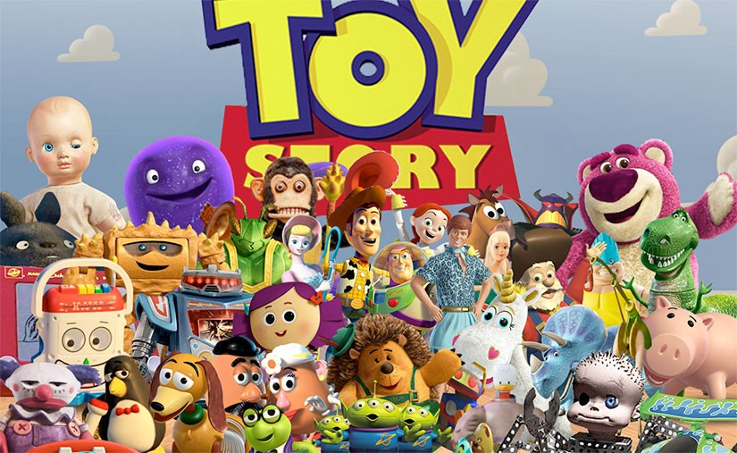

First Toy Story

우디(톰 행크스 목소리 분)는 6살짜리 남자 아이 앤디가 가장 아끼는 카우보이 인형인데, 어느날 접었다 폈다 하는 날개와
레이저 디지털 음성을 가진 최신 액션 인형 버즈(팀 알렌 목소리 연기)가 나타나자 그의 위치가 흔들리기 시작한다.
모든 장난감들의 최고의 공포는 새로운 장난감들에 의해 밀려나는 것이다. 애타는 우디의 심정에도 불구하고 버즈는 앤디의
최고 인형으로 자리를 잡고, 장난감 세계 - 우디의 친구인 강아지 슬링키(짐 바니 목소리 분), 참을성 없는 Mr. 포테토(돈 리클스 목소리 분),
마음 약한 공룡 렉스(월레스 숀 목소리 분), 돼지 저금통 햄(존 래츤버거 목소리 분), 아름다운 사기 램프 인형인 보 피프(애니 파츠 목소리 분)
- 에서도 인기가 급상승한다. 한편, 기세등등한 버즈가 자신이 장난감이 아닌, 외계에서 불시착한 우주 전사라고 믿는다. 우디는 버즈를 없앨
계획을 세우나, 우여곡적 끝에 둘은 바깥세상에서 서로의 힘을 합치지 않으면 살아남을 수 없는 상황에 이른다. 한편 라이벌에서 동료사이로 변한
그들은 인형과 장난감을 못살게 하는 악명높은 무서운 아이 시드의 손아귀에 들어가게 된다. 시드와 그를 닮은 개 스커드에게서 벗어나기 위해서
그 둘은 더욱 가까워진다. 버즈는 그가 진짜 우주전사가 아니라는걸 깨닫고 삶을 포기하기까지 이르나 우디의 도움으로 본인의 진짜 가치 - 장난감으로서 -
를 깨닫게 된다. 카우보이와 우주전사는 목숨을 건 모험을 통해 진정한 우정과 신뢰를 배우게 된다.